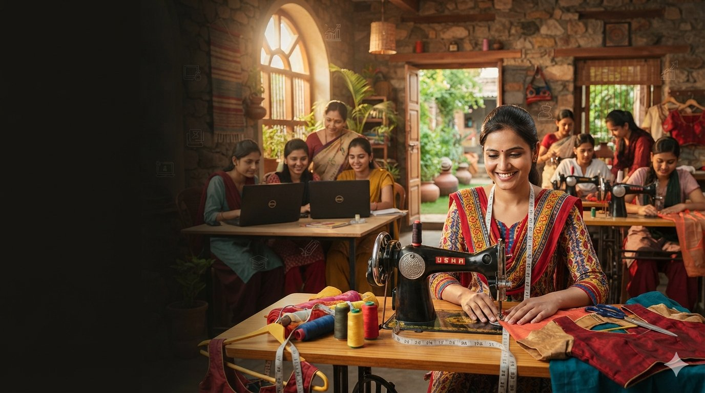
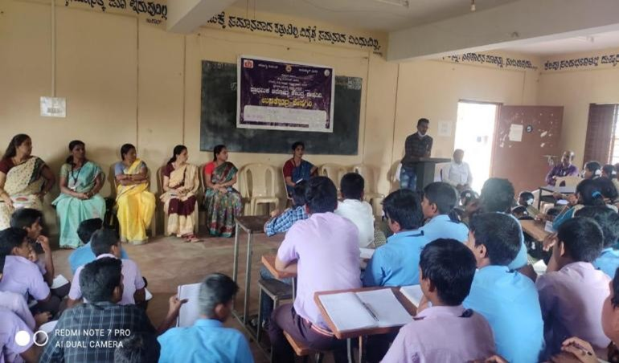
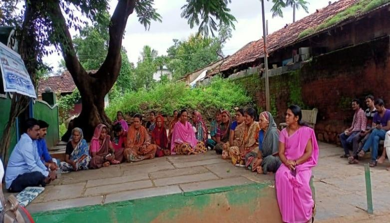
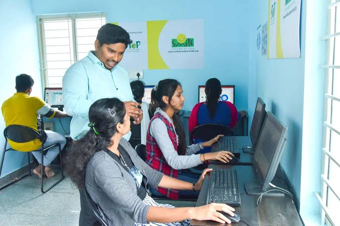
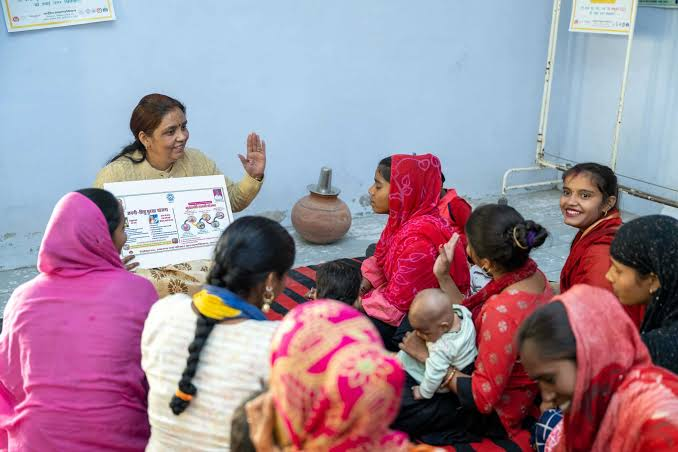

Equipping youth and women with practical skills, digital knowledge and opportunities for greater economic independence.
Sukruti conducts skill development programs designed to provide practical knowledge and improve employment and self-employment opportunities.

Two skill development programs were organized for youth, both male and female. The training focused on basic computer literacy over a duration of 1 month.
Students who had completed 10th grade were trained in:
Word, Excel and PowerPoint.
Basic computer-based Paint application skills.
Practical typing skills in English and Kannada.
Using the Internet and sending emails.
These programs aimed to enhance youth employability in digital sectors and prepare them for future educational or employment opportunities.

Recognizing the financial dependency faced by many women, the organization organized multiple tailoring training programs to empower women through skill-building.
Each training lasted for one month and included:
Stitching of Chudi, Blouse, Kurta, Baby Dress, Skirts, etc.
Out of 137 women trained, 97 became self-employed.
These women now own sewing machines, stitch garments at home, and generate income for their families — a step toward economic independence and confidence.
Moments from Sukruti's computer training and tailoring skill development initiatives.


Support skill development initiatives that help youth and women build practical skills and work toward greater economic independence.
Donate Now →